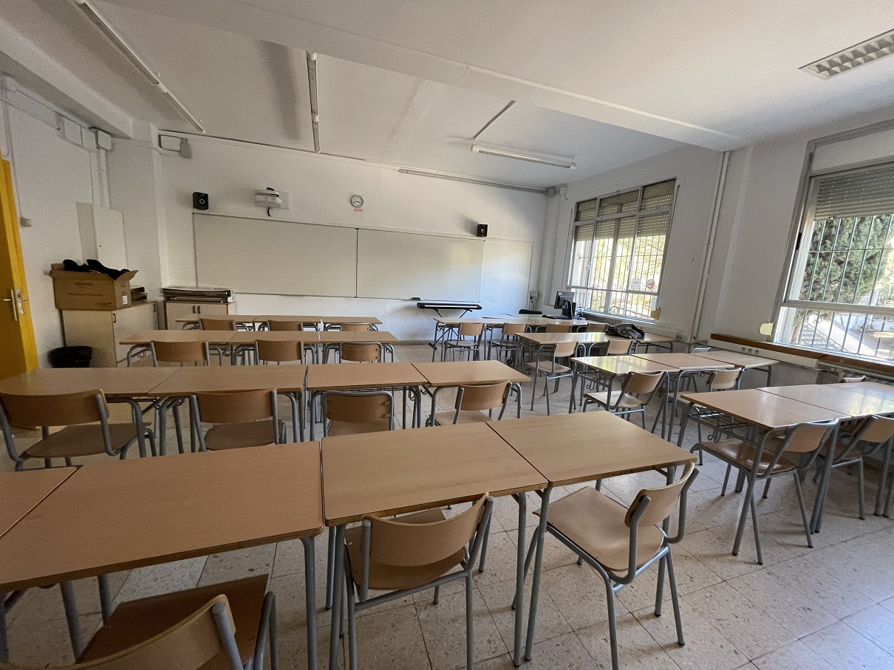

Informacio del centre
Oferta educativa

| Etapa | Durada | Titulacio | Acces posterior |
|---|---|---|---|
| ESO | 4 cursos | Graduat en Educacio Secundaria | Batxillerat i cicles de grau mitja |
| Batxillerat | 2 cursos | Batxiller | Universitat i cicles de grau superior |
| Cicles formatius | 2 cursos (habitualment) | Tecnic o tecnic superior | Mon laboral i estudis superiors |
Com accedir al centre
Per començar els estudis a l'institut cal seguir aquests passos generals:
- Fer la preinscripcio dins el termini establert pel Consorci d'Educacio de Barcelona.
- Esperar la publicacio de les llistes d'admesos.
- Formalitzar la matricula a la secretaria del centre.
- Assistir a la reunio d'acollida amb la familia.
Serveis i espais
El centre ofereix, entre d'altres, els recursos seguents:
- Aules ordinaries i aules especifiques.
- Biblioteca i espais d'estudi.
- Laboratoris i tallers.
- Pati i espais esportius.